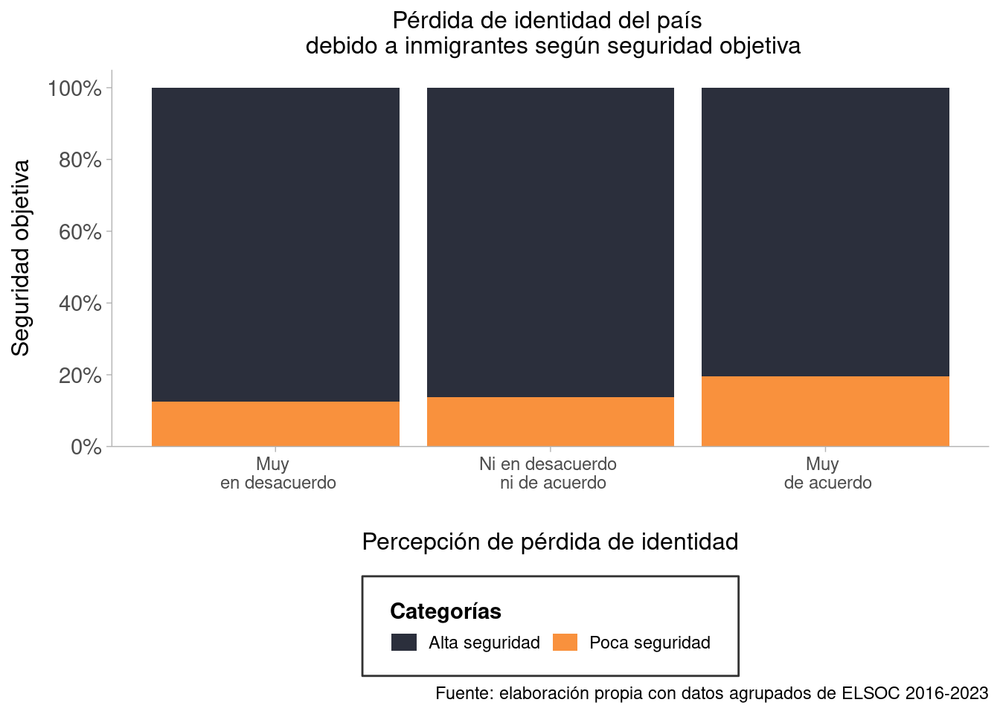

seguridad_genero <- elsoc_6_graph %>%
select(sexo, seguridad_obj, seguridad_sub, contacto_migrantes, simpatia_migrantes,
perdida_identidad, desempleo_migrantes, igualdad_migrantes)Bivariados transversales
Para realizar los cruces de las subdimensiones de la cohesión social con migración, se construyen índices promediados a partir de los indicadores que conforman los constructos validados en la sección anterior.
Note
Si bien, en la sección de análisis de constructos estos se entendieron como factores, para efectos prácticos de difusión se decidió aplicar una construcción de índices, ya que esto permite que los valores se mantengan en la escala original en que fueron medidas las variables, lo cual facilita su interpretación al momento de presentar resultados.
Visualizaciones
Gráficos migración
Scale for fill is already present.
Adding another scale for fill, which will replace the existing scale.
Transversales por subdimensión
Seguridad transversal
En Figure 3 se puede apreciar que las cantidad de personas que viven niveles bajos de seguridad aumenta progresivamente a medida que se está más de acuerdo con que los inmigrantes le restan identidad al país. Por tanto, mientras menos seguras están las personas, se está más convencido de que los inmigrantes erosionan la identidad de Chile.
Vínculos territoriales transversal

Se puede observar en Figure 4 que en 2022 la mayoría de las personas sienten una alta satisfacción con su barrio. Ahora bien, existe una relación negativa entre percibir la pérdida de identidad del país debido a inmigrantes y la satisfacción con el barrio. Esto es, a medida que disminuye la satisfacción con el barrio, aumenta la sensación de que los inmigrantes flagelan la identidad del país.

Cruces filtrados (género/educación)
Seguridad por género
seguridad_hombres <- seguridad_genero %>%
filter(sexo==0)
seguridad_mujeres <- seguridad_genero %>%
filter(sexo==1)seguridad_hombres <- seguridad_hombres %>%
select(-c(sexo))
seguridad_mujeres <- seguridad_mujeres %>%
select(-c(sexo))Figure 9 refleja la asociación entre seguridad objetiva y percepción de pérdida de identidad del país a causa de los inmigrantes, lo cual está graficado por hombres y mujeres. Se puede observar que, en el caso de los hombres, las categorías más polarizadas concentran la mayoría de las respuestas, por lo que no hay un patrón muy claro. En cambio, a medida que las mujeres viven en entornos menos seguros, están más de acuerdo con que el país pierde identidad a causa de los inmigrantes.
Seguridad por educación
seguridad_educ <- elsoc_6_graph %>%
select(educacion, seguridad_obj, seguridad_sub, contacto_migrantes, simpatia_migrantes,
perdida_identidad, desempleo_migrantes, igualdad_migrantes)seguridad_titulo <- seguridad_educ %>%
filter(educacion==1)
seguridad_notitulo <- seguridad_educ %>%
filter(educacion==0)seguridad_titulo <- seguridad_titulo %>%
select(-c(educacion))
seguridad_notitulo <- seguridad_notitulo %>%
select(-c(educacion))# Primero necesitas combinar tus datos
# Agrega una columna identificadora a cada dataset
seguridad_titulo$grupo <- "Con título univ."
seguridad_notitulo$grupo <- "Sin título univ."
# Combina los datasets
datos_combinados <- rbind(seguridad_titulo, seguridad_notitulo)
# Crea el gráfico combinado
ggplot(datos_combinados, aes(
x = desempleo_migrantes,
fill = factor(seguridad_obj, labels = c("Alta seguridad", "Poca seguridad"))
)) +
geom_bar(position = "fill") +
facet_wrap(~grupo, ncol = 2) +
scale_fill_manual(
values = c("Alta seguridad" = "#2b2f3c", "Poca seguridad" = "#f9913d"),
breaks = c("Alta seguridad", "Poca seguridad"),
name = "Seguridad objetiva"
) +
labs(
title = "Percepción de desempleo debido a inmigrantes según seguridad objetiva",
x = "Percepción de desempleo debido a inmigrantes",
y = NULL,
caption = "Fuente: elaboración propia con datos agrupados de ELSOC 2016-2023"
) +
theme_minimal() +
scale_y_continuous(
labels = scales::percent_format(accuracy = 1),
breaks = scales::pretty_breaks(n = 10),
expand = expansion(mult = c(0, 0.05))
) +
scale_x_continuous(
breaks = 1:3,
labels = c("Muy \n en desacuerdo", "Ni en desacuerdo \n ni de acuerdo", "Muy \n de acuerdo")
) +
theme_ggdist() +
theme(
# Estilo de los paneles
strip.text = element_text(size = 12, face = "bold"),
# Estilo de la leyenda
legend.box.background = element_rect(color = "grey20", fill = "white", linewidth = 0.5),
legend.background = element_rect(fill = "white", color = NA),
legend.margin = margin(t = 6, r = 8, b = 6, l = 8),
legend.box.margin = margin(t = 6, r = 6, b = 6, l = 6),
legend.position = "bottom",
legend.direction = "horizontal",
legend.box = "horizontal",
legend.title = element_text(face = "bold", size = 14),
legend.text = element_text(size = 11),
legend.key = element_rect(fill = "white", color = NA),
legend.key.height = unit(12, "pt"),
legend.key.width = unit(20, "pt"),
# Estilo del texto
axis.title.x = element_text(size = 12, margin = margin(t = 20)),
axis.text.x = element_text(size = 9),
axis.text.y = element_text(size = 11),
axis.title.y = element_text(size = 12),
plot.title = element_text(size = 12, hjust = 0.5),
# Separación entre paneles
panel.spacing = unit(1, "cm")
) +
guides(fill = guide_legend(
title.position = "top",
label.position = "right",
nrow = 1, byrow = TRUE,
keywidth = unit(14, "pt"),
keyheight = unit(10, "pt")
))Vínculos territoriales por género
barrio_genero <- elsoc_6_graph %>%
select(sexo, sentido_pertenencia, satisfaccion_barrio, contacto_migrantes, simpatia_migrantes,
perdida_identidad, desempleo_migrantes, igualdad_migrantes)barrio_hombres <- barrio_genero %>%
filter(sexo==0)
barrio_mujeres <- barrio_genero %>%
filter(sexo==1)barrio_hombres <- barrio_hombres %>%
select(-c(sexo))
barrio_mujeres <- barrio_mujeres %>%
select(-c(sexo))
En Figure 10 se puede observar cómo se relaciona el sentido de pertenencia al barrio con la pérdida de identidad debido a la migración, distinguiendo por género. Los hombres tienden a mantener una postura fuertemente polarizada, en donde, quienes tienen un bajo sentido de pertenencia, pueden creer fervientemente que los inmigrantes causan la pérdida de identidad nacional, o bien, están muy en desacuerdo con esta sentencia. Al contrario, las mujeres con bajo sentido de pertenencia, tienden a percibir de manera más moderada la pérdida de identidad nacional a causa de la migración, siendo la categoría neutral la que posee mayor porcentaje de respuesta.
Vínculos territoriales por educación
barrio_educ <- elsoc_6_graph %>%
select(educacion, sentido_pertenencia, satisfaccion_barrio, contacto_migrantes, simpatia_migrantes,
perdida_identidad, desempleo_migrantes, igualdad_migrantes)barrio_titulo <- barrio_educ %>%
filter(educacion==1)
barrio_notitulo <- barrio_educ %>%
filter(educacion==0)barrio_titulo <- barrio_titulo %>%
select(-c(educacion))
barrio_notitulo <- barrio_notitulo %>%
select(-c(educacion))# Primero necesitas combinar tus datos
# Agrega una columna identificadora a cada dataset
barrio_titulo$grupo <- "Con título univ."
barrio_notitulo$grupo <- "Sin título univ."
# Combina los datasets
datos_combinados <- rbind(barrio_titulo, barrio_notitulo)
# Crea el gráfico combinado
ggplot(datos_combinados, aes(
x = desempleo_migrantes,
fill = factor(sentido_pertenencia, labels = c("Alta pertenencia", "Baja pertenencia"))
)) +
geom_bar(position = "fill") +
facet_wrap(~grupo, ncol = 2) +
scale_fill_manual(
values = c("Alta pertenencia" = "#2b2f3c", "Baja pertenencia" = "#f9913d"),
breaks = c("Alta pertenencia", "Baja pertenencia"),
name = "Sentido de pertenencia"
) +
labs(
title = "Percepción de desempleo debido a inmigrantes según sentido de pertenencia",
x = "Percepción de desempleo debido a inmigrantes",
y = NULL,
caption = "Fuente: elaboración propia con datos agrupados de ELSOC 2016-2023"
) +
theme_minimal() +
scale_y_continuous(
labels = scales::percent_format(accuracy = 1),
breaks = scales::pretty_breaks(n = 10),
expand = expansion(mult = c(0, 0.05))
) +
scale_x_continuous(
breaks = 1:3,
labels = c("Muy \n en desacuerdo", "Ni en desacuerdo \n ni de acuerdo", "Muy \n de acuerdo")
) +
theme_ggdist() +
theme(
# Estilo de los paneles
strip.text = element_text(size = 12, face = "bold"),
# Estilo de la leyenda
legend.box.background = element_rect(color = "grey20", fill = "white", linewidth = 0.5),
legend.background = element_rect(fill = "white", color = NA),
legend.margin = margin(t = 6, r = 8, b = 6, l = 8),
legend.box.margin = margin(t = 6, r = 6, b = 6, l = 6),
legend.position = "bottom",
legend.direction = "horizontal",
legend.box = "horizontal",
legend.title = element_text(face = "bold", size = 14),
legend.text = element_text(size = 11),
legend.key = element_rect(fill = "white", color = NA),
legend.key.height = unit(12, "pt"),
legend.key.width = unit(20, "pt"),
# Estilo del texto
axis.title.x = element_text(size = 12, margin = margin(t = 20)),
axis.text.x = element_text(size = 9),
axis.text.y = element_text(size = 11),
axis.title.y = element_text(size = 12),
plot.title = element_text(size = 12, hjust = 0.5),
# Separación entre paneles
panel.spacing = unit(1, "cm")
) +
guides(fill = guide_legend(
title.position = "top",
label.position = "right",
nrow = 1, byrow = TRUE,
keywidth = unit(14, "pt"),
keyheight = unit(10, "pt")
))Gráficos seleccionados

En Figure 3 se puede apreciar que las cantidad de personas que viven niveles bajos de seguridad aumenta progresivamente a medida que se está más de acuerdo con que los inmigrantes le restan identidad al país. Por tanto, mientras menos seguras están las personas, se está más convencido de que los inmigrantes erosionan la identidad de Chile.

Figure 9 refleja la asociación entre seguridad objetiva y percepción de pérdida de identidad del país a causa de los inmigrantes, lo cual está graficado por hombres y mujeres. Se puede observar que, en el caso de los hombres, las categorías más polarizadas concentran la mayoría de las respuestas, por lo que no hay un patrón muy claro. En cambio, a medida que las mujeres viven en entornos menos seguros, están más de acuerdo con que el país pierde identidad a causa de los inmigrantes.

En Figure 10 se puede observar cómo se relaciona el sentido de pertenencia al barrio con la pérdida de identidad debido a la migración, distinguiendo por género. Los hombres tienden a mantener una postura fuertemente polarizada, en donde, quienes tienen un bajo sentido de pertenencia, pueden creer fervientemente que los inmigrantes causan la pérdida de identidad nacional, o bien, están muy en desacuerdo con esta sentencia. Al contrario, las mujeres con bajo sentido de pertenencia, tienden a percibir de manera más moderada la pérdida de identidad nacional a causa de la migración, siendo la categoría neutral la que posee mayor porcentaje de respuesta.
En primer lugar, en Figure 14 se observa que la gran mayoría de las personas suele tener un bajo nivel de confianza interpersonal, donde el área naranja es superior a la negra en las tres barras. Asimismo, la relación entre las variables indica que, el hecho de confiar menos en terceros lleva a las personas a estar más de acuerdo respecto a que el desempleo en el país es responsabilidad de los inmigrantes.

Figure 15 grafica la relación entre confianza interpersonal y percepción de desempleo debido a inmigrantes, moderando por personas con y sin título universitario. Ambas figuras mantienen un patrón idéntico, donde, a menor confianza interpersonal, más acuerdo hay en que los inmigrantes aumentan el desempleo en Chile. No obstante, las personas sin título mantienen una relación más acentuada entre desconfianza hacia terceros y percepción de desempleo en comparación con las personas con carrera universitaria finalizada.